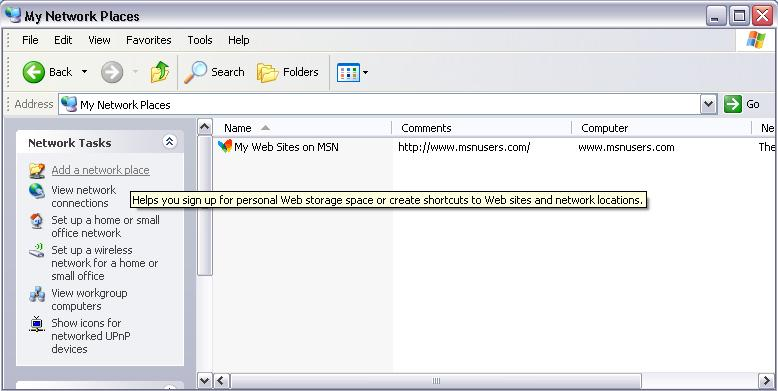
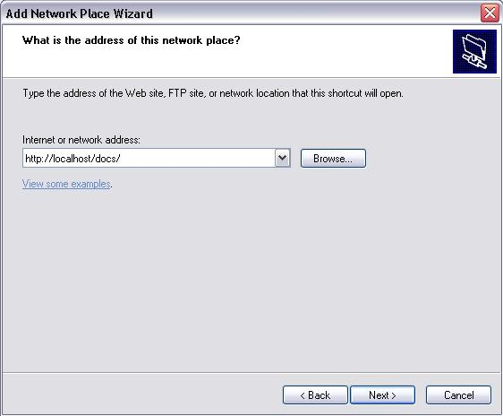
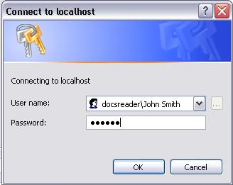
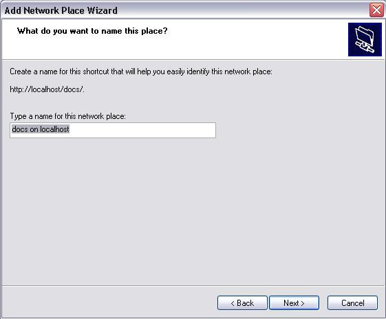

TUTORIAL
| Module: | pyfileserver |
|---|---|
| Author: | Ho Chun Wei, fuzzybr80(at)gmail.com |
| Project: | PyFileServer, http://pyfilesync.berlios.de/ |
| Copyright: | Lesser GNU Public License, see LICENSE file attached with package |
Purpose
The purpose of this document is to provide a step-by-step example for obtaining the PyFileServer package and running it to share a number of directories as realms over the web.
At the end of the tutorial is a FAQ addressing issues with logging, authentication and WinXP Network Places support.
Downloading and Installing PyFileServer
PyFileServer is a WSGI web application for sharing filesystem directories over WebDAV.
Get and install the latest release of Python, available from
Python 2.3 or later is required; Python 2.4.1 or later is recommended.
Get and install the latest release of PyXML, an advanced XML library that is required for PyFileServer. You can obtain the package from
Follow instructions from the PyXML documentation for installation. PyFileServer REQUIRES PyXML to compile and run.
To verify that PyXML is installed on your system, you may run the python interpreter, and at the python prompt:
>>> import xml.dom.ext.reader
If PyXML is installed, the module will be found and the statement returns without any output. If PyXML is not installed, the module is not found and the python interpreter will throw the following error:
Traceback (most recent call last): File "<stdin>", line 1, in ? ImportError: No module named xml.dom.ext.reader
Download the latest PyFileServer release. Get the code from:
http://developer.berlios.de/project/showfiles.php?group_id=4191
Unpack the archive in a new directory (not directly in Python's site-packages).
For the purposes of this tutorial, we will assume that PyFileServer was extracted into the directory C:\pkgs\PyFileServer (assuming Windows machine. PyFileServer is designed to work over all flavours of unix and linux, as well as Windows. It is not tested over other platforms such as Macs).
You may wish to simply run PyFileServer with the bundled standalone server from the directory rather than install it as a python site package. If so, you can skip this step and proceed to the next section.
You only need to install PyFileServer if you wish to use the included python applications or libraries in other applications or python web frameworks.
Within the directory, type the following command to install the package:
C:\pkgs\PyFileServer> python setup.py install
The installation process will:
- Install setuptools and easysetup on your machine if it does not already have them. These are useful utilities for installing python packages.
- Check that PyXML is installed. If not, process will aborted with an error message stating that PyXML could not be detected.
- Install and compile PyFileServer as one of the python site packages on your machine.
Configuration File
Let us first run through the configuration file. An example of the configuration file is given in PyFileServer-example.conf . The configuration file consists of the following sections:
Configuration File
Initialization: Do not modify this section - it contains code to help with the rest of the configuration file.
Server Options
- Property Options, Locks Options, Domain Controller Options
These sections allow the administrator to define python objects and functions to customize the application. For example, instead of the built-in domain controller that uses the Users section below for authentication, a domain controller could be coded to interface and verify authentication with the organization's LDAP server. For more information about this, refer to the developer's guide.
For our purposes in this tutorial, we can leave these options as they are to use the default objects bundled with the application.
- HTTP Authentication Options
This section configures the types of HTTP authentication accepted. PyFileServer supports basic and digest HTTP authentication schemes <http://www.ietf.org/rfc/rfc2617.txt>.
There are three options to be set to "True" or "False". acceptbasic determines if basic authentication is enabled. acceptdigest determines if digest authentication is enabled. defaultdigest determines if the server should respond with a digest authentication request (instead of a basic one) if an unauthenticated request arrives.
- Verbose Output
- The verbose option takes a value of 0, 1 or 2, and determines the level of logging. 0 means no logging, 1 summary and 2 full logging. A sample of logs at verbose = 1 and verbose = 2 is available.
- Organizational Information
The Info_AdminEmail and Info_Organization options allow the administrator to customize the trailer line at the bottom of any html output, such as error messages or directory listings in a browser window. For example:
Info_AdminEmail = 'admin@sampleserver.com' Info_Organization = 'PyFileServer - Hosted at Sample Server'
- Yields the following trailer line:
- Administrator at PyFileServer - Hosted at Sample Server
Resource Abstraction Layers : Area to define custom resource abstraction layers.
Realms: Area for the administrator to define realms for sharing.
Users: Area for the administrator to define users for the realms.
Authentication
Open the file PyFileServer.conf in a text editor.
Browse through the configuration file until you hit the Users section:
############################################################################################ # USERS # adduser('v_root' , 'user', 'password', 'description') # If no users are specified for a realm, no authentication is required to fully access the realm # # Note: If you wish to use Windows WebDAV support (such as Windows XP's My Network Places), # you need to include the domain of the user as part of the username (note the DOUBLE slash), # such as: # adduser('v_root', 'domain\\user', 'password', 'description')Let us add the following users:
For the "docs" realm (sharing C:\pkgs\PyFileServer\docs)User "John Smith", password "ABCD"User "Dan Brown", password "DEFG"For the "satelliteimages" realm (sharing C:\Space\Satellite\Images)User "SpaceGuy", password "SpacePictures"We add the following code to the section. Note that the last field is empty - it is a description field that is currently not used:
adduser('docs', 'John Smith', 'ABCD', '') adduser('docs', 'Dan Brown', 'DEFG', '') adduser('satelliteimages', 'SpaceGuy', 'SpacePictures', '')Save the configuration file (PyFileServer.conf)
Restart the server. This is usually done by going to the window/shell that the server is running and pressing Ctrl-Break (or Ctrl-C/kill for linux/unix), and then re-running the server:
C:\pkgs\PyFileServer> python ext_wsgiutils_server.py --port 80
Now you can test the url: http://localhost/docs/ again. You may have to refresh or navigate to a new portion of the share to avoid the browser showing you a cached copy. The browser will prompt automatically for the username and password.
Errors
This section describes some of the more common errors that may crop up while using PyFileServer. If the error is specific to accessing the share from WinXP Network Places, please refer to the next section WinXP Network Places .
The server runs, but when I try to access the url, the browser/client indicates that the server could not be found.
You should doublecheck the hostname and port used. The default hostname used is "localhost", which allows only local access. To access the share from another computer, use "0.0.0.0" as the hostname. The default port is 8080, not 80 (standard HTTP port).
You could also check with the computer administrator if any firewall or hosts configuration is preventing you from accessing that url/port.
When I run the server, it fails with the following error (or similar):
RuntimeError: Failed to read PyFileServer configuration file : C:\SoC\PyFileServer\PyFileServer.conf
This is usually appears as part of a larger chunk, like:
Traceback (most recent call last): File "ext_wsgiutils_server.py", line 254, in ? serve(optionsdict, PyFileApp(configfilespecified)) File "C:\SoC\PyFileServer\pyfileserver\mainappwrapper.py", line 54, in __init__ raise RuntimeError('Failed to read PyFileServer configuration file : ' + specifiedconfigfile + '\nDue to ' + exceptiontext) RuntimeError: Failed to read PyFileServer configuration file : C:\SoC\PyFileServer\PyFileServer.conf Due to File "C:\SoC\PyFileServer\PyFileServer.conf", line 100 This is a syntax error ^ SyntaxError: invalid syntaxThis means that there was an error reading the PyFileServer.conf, usually as a result of a syntax error within the file. The text below the error may give additional information as to the cause of the syntax error.
My shares/users configuration is not working! It refuses access for user or returns a 404 Not Found error when I try to access the share.
Check your configuration and paths. Most likely it is due to forward slashes in the username/password or path name. Remember that the forward slash is used as an escape character - you need two forward slashes where one is required to properly escape the forward slash.
I occasionally get the following exception output on the screen, that includes the text: error: (10053, "Software Caused Connection Abort")
The full trace is usually like:
ERROR:root:Traceback (most recent call last): File "ext_wsgiutils_server.py", line 163, in runWSGIApp self.wsgiWriteData (data) File "ext_wsgiutils_server.py", line 199, in wsgiWriteData self.wfile.write (data) File "C:\Apps\Python24\lib\socket.py", line 256, in write self.flush() File "C:\Apps\Python24\lib\socket.py", line 243, in flush self._sock.sendall(buffer) error: (10053, 'Software caused connection abort') ---------------------------------------- Exception happened during processing of request from ('127.0.0.1', 2539) Traceback (most recent call last): File "C:\Apps\Python24\lib\SocketServer.py", line 463, in process_request_thread self.finish_request(request, client_address) File "C:\Apps\Python24\lib\SocketServer.py", line 254, in finish_request self.RequestHandlerClass(request, client_address, self) File "C:\Apps\Python24\lib\SocketServer.py", line 521, in __init__ self.handle() File "C:\Apps\Python24\lib\BaseHTTPServer.py", line 314, in handle self.handle_one_request() File "C:\Apps\Python24\lib\BaseHTTPServer.py", line 308, in handle_one_requestmethod() File "ext_wsgiutils_server.py", line 113, in handlerFunction self.do_method() File "ext_wsgiutils_server.py", line 121, in do_method self.runWSGIApp (app, scriptName, pathInfo, query) File "ext_wsgiutils_server.py", line 173, in runWSGIApp self.wsgiWriteData(SERVER_ERROR) File "ext_wsgiutils_server.py", line 199, in wsgiWriteData self.wfile.write (data) File "C:\Apps\Python24\lib\socket.py", line 256, in write self.flush() File "C:\Apps\Python24\lib\socket.py", line 243, in flush self._sock.sendall(buffer) error: (10053, 'Software caused connection abort') ----------------------------------------This is a common occurrence, and is caused by the client (software that is connecting to the server) breaking the connection as soon as it obtains the return code without reading the rest of the headers and response body. Its the telephone conversation equivalent of hanging up after you've heard what u needed, even if the other person is still in mid-sentence.
If this is a issue, post on the user list (see last question) and a fix would be put in to omit such printouts.
My question is not in this list
For further help or documentation, please refer to the project web page or send a query to the mailing list.
Project Page: PyFileServer <http://pyfilesync.berlios.de/pyfileserver.html>Mailing List: pyfilesync-users@lists.berlios.de ( subscribe )
WinXP Network Places
This section describes some of the caveats when using PyFileServer with WinXP Network Places.
To access PyFileServer from WinXP Network Places, do the following:
Go to My Network Places, and click on "Add a network place"
The Add Network Place wizard will launch. Click Next to proceed. Select the following option and click Next.

Enter the appropriate URL and click Next.
If authentication is required, Windows will popup a window to request for the details.
You can then select a name for the network place, and click Next
Click Finish to complete the procedure
There are certain caveats to be observed:
When entering the URL, no port must be specified. This means that PyFileServer MUST run on port 80. (This is a winXP specific issue, and is tracked here)
When specifying usernames for authentication, please specify them in the form domainuser (windows form) or user@domain (msn form). If a domain is not specified then Windows will send the current user's domain as part of the username to the server. Example in the users section:
adduser('docs', 'docreaders\\John Smith', 'ABCD', '') adduser('docs', 'docreaders\\Dan Brown', 'DEFG', '')And then the user should enter as the username "docreaders\John Smith". If the user entered only "John Smith" and the current domain name is "HOMEPC", then Windows will send "HOMEPC\John Smith", which will not authenticate properly.
Windows may remember your username and password based on the host URL. For example, if you have already mapped http://localhost/docs/ as a user, it may remember and use the same details to authenticate if you attempt to map http://localhost/satelliteimages/.
Last Generated : Wed, 31 Aug 2005 07:10:19 GMT